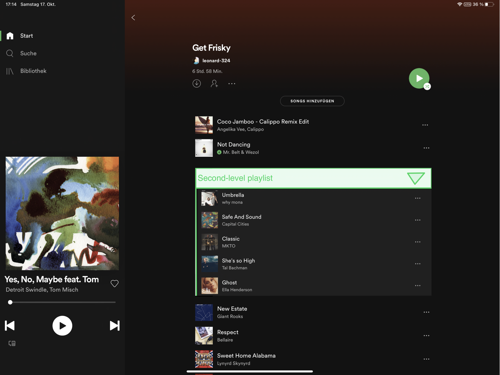
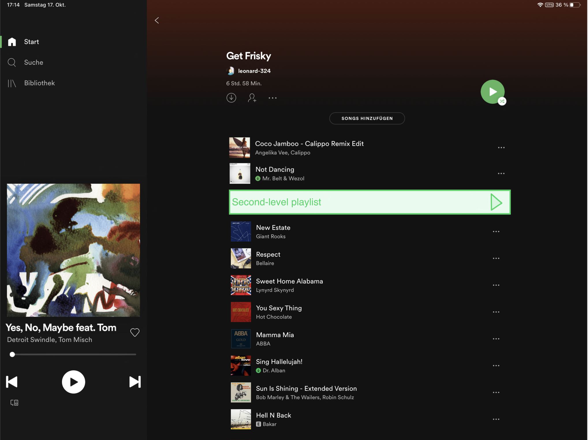

Latest News: Spotify - by Leonard Brenk


Playlist in Playlist
The main idea is to extend Spotify's functionalities in regard to playlist creation and adaptation. Many different situations call for a slightly different combination of songs. Today's 20 different situations would require 20 different playlists if they are to be optimized for that particular situation. Unfortunately keeping 20 playlists up-to-date takes too much time for the average Spotify user. This update proposes second-level playlists in order for you to be able to cover 20 different situations with only 5 playlists.
Since this update is more of an addition then a replacement, the basic core playlists can still contain only songs. Through this update however, playlists can include other playlists and all songs included in them. Playlists containing another playlist is called a first-level playlist, a playlist being contained by another is called a second-level playlist. In order for users not to feel confused third-level playlist will not be allowed. If a song is added to a playlist that has no second-level list included and is not second-level list itself, everything proceeds as known. If the playlist does have a second-level list included, a new song is added to the playlist next to the second-level list but not into it. If a song is added into a list that serves as a second-level list somewhere, all playlists containing that playlist now also contain the newly added song.
In order for users to be able to distinguish between a first-level and a second-level song in a playlist, a second-level playlist can be hidden through a dropdown button. Also songs belonging to a second-level playlist have a slightly darker background-color.
Since this update is more of an addition then a replacement, the basic core playlists can still contain only songs. Through this update however, playlists can include other playlists and all songs included in them. Playlists containing another playlist is called a first-level playlist, a playlist being contained by another is called a second-level playlist. In order for users not to feel confused third-level playlist will not be allowed. If a song is added to a playlist that has no second-level list included and is not second-level list itself, everything proceeds as known. If the playlist does have a second-level list included, a new song is added to the playlist next to the second-level list but not into it. If a song is added into a list that serves as a second-level list somewhere, all playlists containing that playlist now also contain the newly added song.
In order for users to be able to distinguish between a first-level and a second-level song in a playlist, a second-level playlist can be hidden through a dropdown button. Also songs belonging to a second-level playlist have a slightly darker background-color.

Feed for verified artist
As of right now spotify allows fans to follow their idols and loved artists, which impacts their suggested songs and customized mixtapes. This update strives for a more lively and interactive communication between artists and fans through spotify and a way for artists to reach and interact with their supporters on a music-based platform.
More specific: the artists act as the more dominant communication part and will contribute content through realtime-listening, stories, open sessions and regular posts - all of which are possible live or off-line.
- Real-time listening The spotify application used on a computer gives the user the opportunity to join into friends songs in real-time. This is a magnificent feature which needs to be included in the mobile versions too. It allows users to interact with each other and be inspired by music of others. In this update we want to take it even further and implement this feature for artists. These can - if they want - publish their current song and allow people to join intho their flow of songs.
- Stories are meant for artists to update their followers on a regular basis about their musical activities. Meaning only music related contents. Stories are like on other social media services short videos which in this case will be used to record a new riff, talk about other artists and their music or release something important to the puplic. The idea is based on the concept of stories on instagram or snapchat but with a much higher focus on high quality music content. This way users can stay updated on their followed artists while listening to cool tracks and extending their horizon by learning about new genres and musicians.
- Open sessions are (possibly) scheduled shows that one or more musicans can give. It can most likey be compared to an instagram live story. Artists are offered a digital stage on which they can enrich the spotify community through talks, short plays or real online concerts if they like.
- Regular Posts It is not a secret that instagram and similar services have conquered the social world. We do not propose to copy the idea carelessly but rather optimize it for this particular circumstance. This update recommends a feed which presents the news posts made by verified artists who are the only ones permitted to share. In that way new songs, recommendations, releases or just simple updates can be carried out to all following users.

Spotify Friends
This year Spotify introduced the personal all time favourites list. Pretty good idea but with developing it to a larger more standard playlist, it doesn't reach its' full potential. We propose to inlcude five spots directly in your account which list your five favourite songs. These songs can be accessed by all followers. It might serve as a preview of that users music of interest.
Music builds bridges! That is why from our point of view Spotify should extend their friends-sections and offer more possibilities to connect with people over the world. Starting with introducing a new navigation button next to Start, Library, Search, Friends.
Another concept we would like to submit is group sessions. It can be seen as a little upgrade to the current sessions which connects users to the current songs of one specific account. THe problem is that this session doesn't stay accessibly for devices. Imaging having a group session which is created omce and can be empty. Users can join and play a tune in that group session dynamically. It is comparable to a floor at a dance club, people can go if they are tired but it will always be there when they decide to come back.
A group cannot cointain a song, it is purely the private or public room to play and listen collectively.
Optimized AI
For me as a convinced and experienced Spotify user the accuracy in parts of suggested songs and predicted genres is one of the reasons I chose Spotify over Apple Music or Deezer. Although I am dramatically lacking insights in the inner workings of the AT, I would like to conjecture that producing more information will help optimize the algorithm even further. That's why this update would like to implement a few more buttons for the user to express their opinion about the current song, artist and playlist. Even the amount of time the user has already listend to the track or album before clicking the specific button shoudl be taken into account. Also what has already been implemented in the weekly mix on computer should be included in mobile versions as well, which is the ability to dismiss a song of artist from your future weekly mix. The AI should observe what part of a song a user listens to. What part of a song do users prioritize. Intro or chorus, loud or quite, fast or slow, instrumental or accapelle. A possibility to gain information about the users interest is to let the user - if willing - chose categories and artists on a monthly basis equipped with weights to discover the users preferences. To decide which artist or genre is offered by the AI it can use ensemble methods like Random Forests bagged by Information Entropy Gain - the specifics would depend on the data scientist.
Ultimate Spotify
Many people who listen to music also play it themself. Whether they like to sing or play the guitar or piano, they often lack access to chords. Therefore we suggest a small section for artists to upload the chords for their music. If they are open to it even videos or play-alongs. The idea is based on an existing app called Ultimate Guitar.
Playlist Generator
Suggested in this section is an improvement to the publishment of playlist. As of there are two main settings possible for users in regard to their playlists: Hide or show and set as shared or private. Although there is no possible way for a group of friends to work on a playlist while it is available for other listeners. If you like to work together, it must be shared and if you want people to be able to listen to your amazing work it must be public. We propose another feature which allows you to pick who will be able to adapt the playlist. This way every Spotify user can listen to it but only a few can change it.